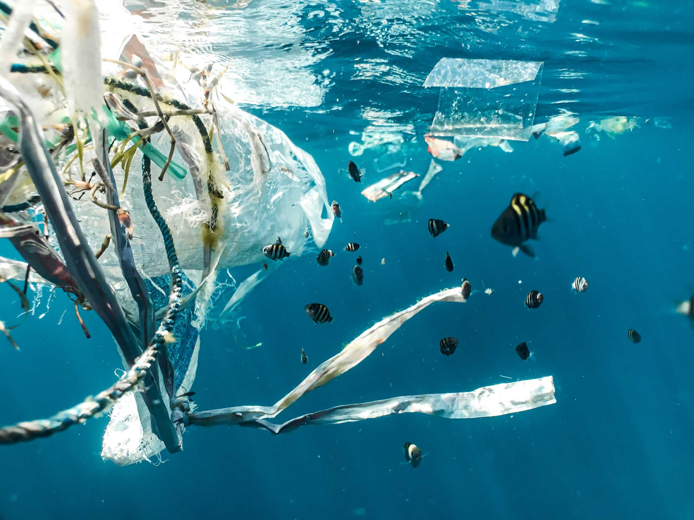

Mi az a vízszennyezés?
Vízszennyezésnek nevezzük azt a környezetszennyező folyamatot, melynek során a víz rosszabb minőségűvé válik. A vízszennyezésnek tekinthető, ami a kialakult ökoszisztémára veszélyt jelenthet. A víz a legféltettebb kincsünk – hangzik el olyan sokszor ez a mondat, ám a jelenlegi helyzet úgy fest, nem igazán tartjuk ehhez magunkat. Amikor vízszennyezésről van szó, akkor egy olyan környezetkárosító tevékenységről beszélünk, amelyet az emberek idéznek elő és amelynek igen komoly negatív hatásai vannak az állat-és növényvilágra egyaránt.A víz a legféltettebb kincsünk – hangzik el olyan sokszor ez a mondat, ám a jelenlegi helyzet úgy fest, nem igazán tartjuk ehhez magunkat. Amikor vízszennyezésről van szó, akkor egy olyan környezetkárosító tevékenységről beszélünk, amelyet az emberek idéznek elő és amelynek igen komoly negatív hatásai vannak az állat-és növényvilágra egyaránt. Emellett ide sorolandó minden olyan anyag megjelenése a természetes vízben, amely így emberi fogyasztásra alkalmatlanná válik, a benne zajló természetes életfolyamatok lehetősége pedig lecsökken vagy ellehetetlenül. A helyzet az, hogy a fentiek egyre gyakoribb jelenségnek számítanak világviszonylatban, viszont tehetünk ellene akár magánemberként is!
Mik lehetnek az okai?
A szennyeződés többféle módon kerülhet a vizekbe. A statisztikák szerint a szennyvizek csaknem fele ipari tevékenység nyomán jön létre, amikor szerves és szervetlen vegyipari termékek kerülnek a természetes közegbe. Ide sorolandók például a hűtővizek, a technológiai használt vizek, az üzemi szociális szennyvizek, valamint az üzem területéről elvezetett csapadékvíz is. Ennek kapcsán pedig mindenképpen meg kell említeni az olajszennyezést is, amelyért nagy részben nem a tanker balesetek felelnek, bár tény, hogy ezek végzik a legkomolyabb pusztítást rövid távon. Hosszú távon viszont az olajipar normális napi tevékenységéből ered az olajszennyezés nagyobb része, innen kerül a használt motorolaj és ipari olaj nagy része a vizekbe
Hogyan lehet ezen csökkenteni?
A vízszennyezés megelőzése és csökkentése közös felelősség, amely egyéni, közösségi, ipari és kormányzati szinten is fontos. Egyénileg úgy segíthetünk, hogy nem öntünk vegyszereket a lefolyóba, környezetbarát tisztítószereket használunk, csökkentjük a műanyaghasználatot, és részt veszünk szemétszedési akciókban. Közösségi szinten a vízpartok tisztán tartása, a környezettudatosság terjesztése és az önkormányzatok ösztönzése hatékony eszköz lehet. Az iparnak korszerű szennyvíztisztítást és zöld technológiákat kell alkalmaznia, míg az államnak szabályozásokkal, ellenőrzéssel, támogatásokkal és oktatással kell elősegítenie a tiszta vizek megóvását. A víz érték, amelynek védelme mindannyiunk érdeke.